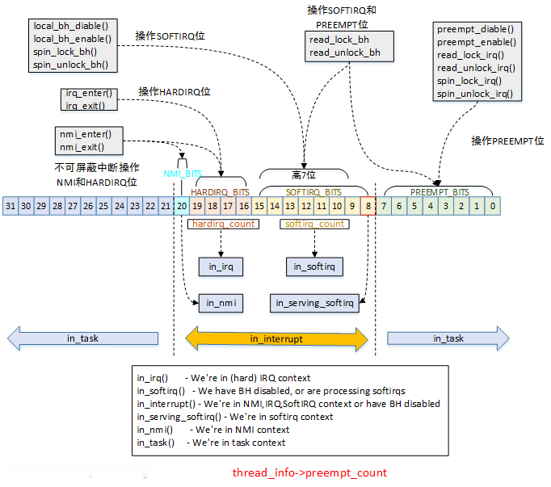

中断处理程序¶
中断，一般指的是由外部硬件设备产生的中断，它可以打断当前正在执行的程序，转而执行一段新的设定好的代码，这段代码就叫中断处理程序(interrupt handler)。当然，在执行真正的中断处理程序之前，内核还有许多准备工作要做，这不在本文的讨论范围之内。
每个设备都应该有它对应的中断处理程序，由驱动工程师编写。中断处理程序处于特殊的中断上下文中。相较于可以睡眠的进程上下文，中断上下文是原子的，不可被打断。
中断处理程序必须快进快出，以免影响正常的代码逻辑。内核对于中断的处理分成了两个部分：上半部（Top Half）和下半部（Bottom Half）。通常所说的中断处理程序是指上半部——当接收到一个中断后，它立刻被执行，但只做有严格时限的工作。例如对接收到的中断进行应答等等。而下半部则执行延后的工作，由内核来选择合适的时机执行。
申请中断¶
在驱动程序中申请中断可以使用request_irq()函数：
int request_irq(unsigned int irq, irq_handler_t handler, unsigned long flags,
const char *name, void *dev)
{
//实际就是调用中断线程化函数，但是将处理的线程置为NULL
return request_threaded_irq(irq, handler, NULL, flags, name, dev);
}
irq：申请的中断号
handler：注册的中断服务函数
flags：中断标志
name：中断名称，显示在/proc/interrupts中
dev：设备指针，一般为设备驱动程序的结构体指针
request_threaded_irq()函数主要完成以下工作：
- 根据
request_irq()函数传递的参数，对struct irqaction中的字段赋值 - 将新的
struct irqaction链接到irq对应的struct irq_desc上。多个共享中断的设备必须设置IRQF_SHARED标志。 - 如果
thread_fn != NULL，调用setup_irq_thread()来新建一个独立线程处理中断。 - 如果中断之前没有被激活，则激活中断。
request_irq()函数调用了request_threaded_irq()函数，并将thread_fn参数置为 NULL。二者的区别为：request_irq()的 handler 直接在当前中断上下文执行，而request_threaded_irq()的 thread_fn在独立的线程中执行，且优先级为 SCHED_FIFO。
由于中断号是有限的，而多个设备驱动又可以共享同一个中断号，因此内核采用了两种结构体来管理中断：struct irq_desc和struct irqaction，二者是一对多的关系。struct irq_desc与中断号对应，而struct irqaction则与设备对应，如果有多个共享中断号的设备，将它们挂在struct irq_desc的链表上。
那么内核是如何管理这些外部中断的呢？
很容易想到，我们可以用一个静态数组来管理，数组中每个元素都是struct irq_desc结构体：struct irq_desc irq_desc[NR_IRQS]。
这个数组的关键就在于 NR_IRQS 的值，如果取一个很大的值，而外设对应的中断又不多的情况下就会很浪费内存。
还有一种方法是动态方法，用到了 radix tree(基数树)，这种结构可以快速地通过key找到value。中断号是key，通过它我们就能很快定位到struct irq_desc结构体。
需要注意的是，这里的中断号并不是真正的物理意义上的中断号，而是内核抽象出来给软件使用的中断号。因为物理信号与硬件设备关联较大，内核不可能为每个硬件设备去配置一个中断号，因此就需要有一层中断抽象层，将物理信号转换为虚拟信号。
执行完中断服务器程序后，会检查是否需要重新调度（need_resched标志位），然后判断返回哪个空间：
-
返回用户空间：调用
schedule()函数。 -
返回内核空间：如果preempt_count标志为0，调用
schedule()函数，否则不会触发调度。
中断控制¶
Linux内核提供了一组接口用于操作机器上的中断状态。这些接口为我们提供了能够禁止当前处理器的中断系统，或屏蔽掉整个机器的一条中断线的能力。这些操作都是与体系结构相关的。一般来说，控制中断系统的原因归根到底是需要同步。通过禁止中断，可以确保当前执行路径不会被中断打断。
下面这两个函数可以禁止/使能本地CPU中断：
Warning
中断对于内核的运行至关重要，在屏蔽中断期间所有中断都无法处理。所以在驱动程序中，不要使用这两个函数。
如果只是想中断下半部，可以使用local_bh_disable()和local_bh_enable()。
如果在调用local_irq_disable()函数前已经禁止了中断，那么该操作会带来潜在的危险。同样，local_irq_enable()函数也存在危险，因为它会无条件激活中断。当内核代码变得复杂时，我们并不知道当前处理器中断状态，所以我们需要一种机制，仅仅时把中断恢复到以前的状态而不是简单地禁止或者是激活。
在前面的内容中，我们知道了禁止整个处理器上所有中断的函数。如果只是禁止特定的中断线，相关函数如下：
void disable_irq(unsigned int irq);
void disable_irq_nosync(unsigned int irq);
void enable_irq(unsigned int irq);
void synchronize_irq(unsigned int irq);
由于现代设备驱动程序的中断处理程序往往共享某个中断线，禁止了某条中断线也就禁止了这条线上所有设备的中断传递。因此这些接口函数不应该被使用。
下半部机制¶
操作系统需要有一个快速、异步且简单的机制负责对硬件迅速做出相应并完成那些时间要求很严格的操作。中断处理程序很适合于实现这些功能。而对于那些时间要求相对宽松的任务，应当放到下半部去处理。
理想情况下，最好让所有的工作都交给下半部去处理。但是，总有一些工作需要中断处理程序来完成，比如对中断的到达进行确认，从硬件拷贝数据等。如何区分上半部和下半部，完全由驱动程序开发者自行判断。如果任务满足以下要求，则适合放到中断处理程序执行。
- 如果这个任务对时间非常敏感。
- 如果这个任务和硬件相关。
- 如果这个任务不能被其他中断打断。
其他所有任务，考虑放在下半部执行。在编写程序时，中断处理程序仅执行最关键的紧急任务，将后续的非紧急任务放在下半部中处理。
task_struct中的preempt_count字段用于记录当前任务的上下文状态。

- PREEMPT_BITS：记录禁止抢占的次数
- SOFTIRQ_BITS：记录是否使能下半部
- HARDIRQ_BITS：记录是否处于硬件中断上下文中
其余内容，见中断下半部。